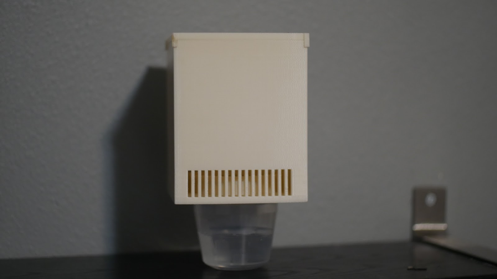
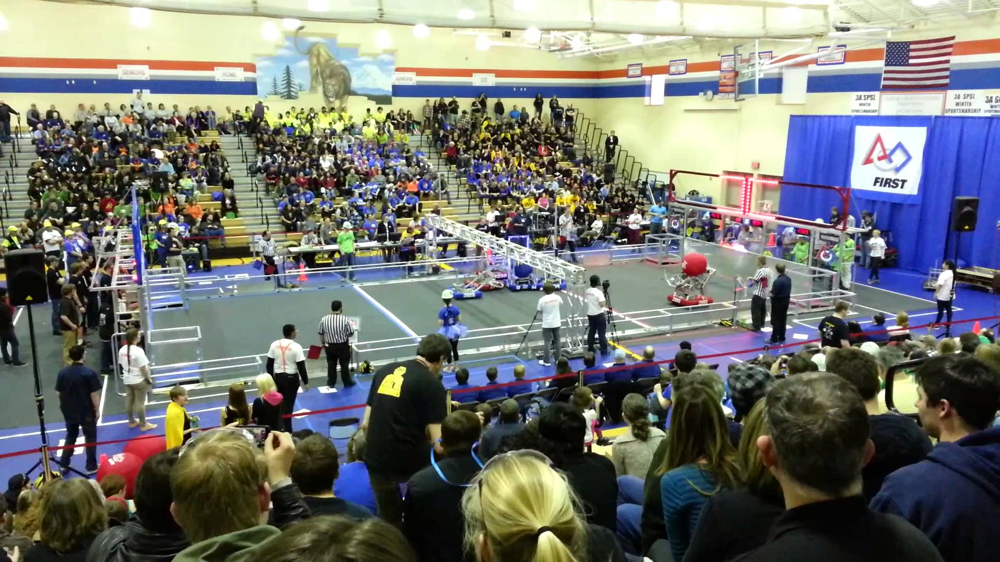
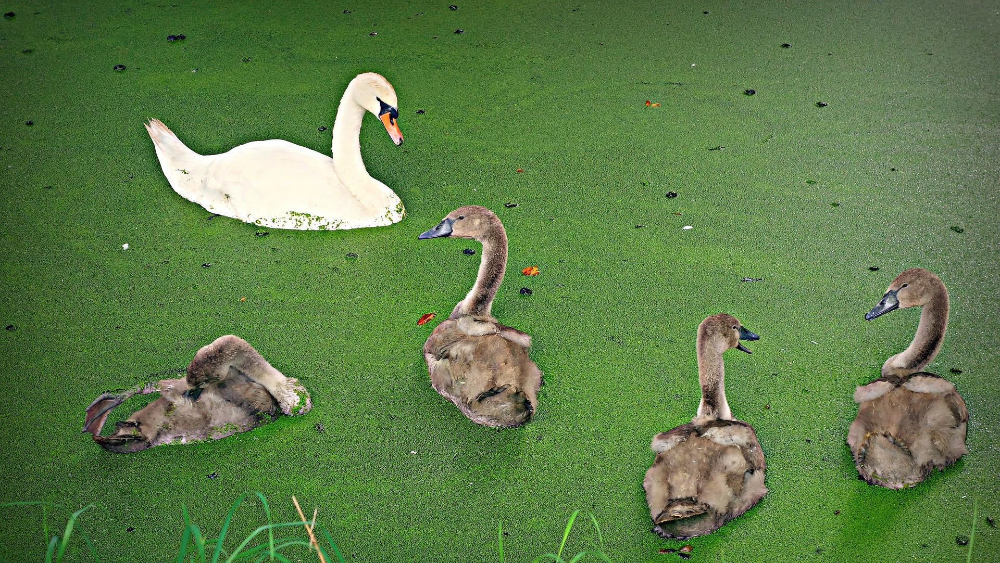

1 / 3

Students in the AP Capstone program spend the school year conducting their own novel academic research which they present to a panel of industry experts at the end of the year. One student, Marcus Amalachandran, who is also in TSA, is working on an atmospheric water generator. Although most atmospheric water generation (AWG) devices are designed for third world countries, many designers do not take into consideration that in their designs water and air filters must be replaced and fans break after a long period of time due to high speed moving parts. This is a problem because many people in third world countries do not have the money to constantly be replacing filters, and repairing broken fans. Marcus intends to explore the advantages of using Ionic Wind generation to not only create airflow in an AWG device, but using the ozone produced to purify the water collected to kill micro organisms/bacteria. Though a qualitative study (analysis of cost, water purity, water collection) he wishes to prove that using his method is just as effective or superior as opposed to traditional methods.
2 / 3

Jackson boasts an extremely successful FIRST Robotics team. Having competed at various competitions including the FIRST World Championship, the team, nickanmed "Jack in the Bot" is one of the largest clubs in the school. With help from community members and mentors from companies including Boeing and Microsoft, the team has been able to culture the skills they gained from CTE classes in school and apply them to each year's challenge.
3 / 3

As part of the Science and Engineering Club, students conduct independent academic research using the knowledge they gained from their science and CTE courses, and compete in fairs across the country. One student, Arka Bhattacharya, is working on a unique project that uses plant material to remove toxic compounds from water. Over the course of the year, Arka conducted background research about this process-- phytoremediation-- and the science and engineering behind it. He is applying this knowledge in the form of a laboratory experiment that uses new methodology to take on the water crisis we face today in the developing world. This project involves the use of Lemna minor, a form of duckweed, as a biosorbent for accumulating the heavy metal lead from water.
❮
❯